House Atreides
Blue · Caladan
Helmet · chestplate · leggings · boots
Speed I while moving; a matching full set adds four hearts.
View the full kit & lore →PROJECT DUNE / ARMOURY
Faction kits on Minecraft mannequins, complete item lore and the abilities of every stillsuit.
Five allegiances. Five stillsuits. Choose the colours you carry into the dunes.
Blue · Caladan
Helmet · chestplate · leggings · boots
Speed I while moving; a matching full set adds four hearts.
View the full kit & lore →Red · Giedi Prime
Helmet · chestplate · leggings · boots
Combat damage +15%; a matching full set refreshes Strength II.
View the full kit & lore →Purple · Kaitain
Helmet · chestplate · leggings · boots
Protection III kit armor; incoming entity combat damage reduced by 15%.
View the full kit & lore →Orange · Arrakis
Helmet · chestplate · leggings · boots
Unbreaking III kit armor and Swift Sneak III leggings; two spice units per deposit.
View the full kit & lore →Green · Sigma Draconis IV
Helmet · chestplate · leggings · boots
Matching full set enables five-second Shadow Step; kit includes an explosive charge.
View the full kit & lore →Concept mannequins illustrate the five playable faction kits. In-game stillsuits use dyed vanilla leather armour with custom attributes and faction tags; the artwork does not represent a new armour model. Kits include a tagged harvest shovel. Winged stillsuits are a separate upgrade. The Spacing Guild provides travel services and has no selectable player kit.
COMPLETE ITEM & ABILITY REFERENCE
All 68 illustrated entries, including faction armour, weapons, supplies, markers and interface symbols. Lore is creative flavour; mechanics below describe the plugin. Faction passives and bonuses requiring a matching full suit are identified separately.
| Faction | Homeworld | Implemented traits |
|---|---|---|
| Fremen | Arrakis | Two spice units per harvested deposit; brief Resistance I refreshes while moving on Arrakis. Kit has Unbreaking III and leggings with Swift Sneak III. |
| Harkonnen | Giedi Prime | Player-caused combat damage is multiplied by 1.15. A matching full stillsuit refreshes Strength II. |
| Corrino | Kaitain | Incoming combat damage from an entity is multiplied by 0.85. Kit armor has Protection III. This does not reduce every environmental damage type. |
| Atreides | Caladan | Movement events periodically refresh Speed I. A matching full stillsuit adds eight health points, equivalent to four hearts. |
| Ordos | Sigma Draconis IV | A matching suit enables five-second Shadow Step on main-hand Ender Pearl use. Kit includes a replenishing explosive wind charge. |
Faction passives use the recorded faction. Full-set effects additionally check that all four equipped pieces are tagged stillsuits belonging to your recorded faction. A mixed set can protect against sun exposure if every piece is tagged as a stillsuit, but does not grant a faction set bonus.
Faction selection requests travel to the corresponding homeworld without a normal paid fare. On a proxy network, this is a server-transfer request. On a single backend, the homeworld must already be loaded for a local arrival. Respawn is redirected to the homeworld only when that world is loaded on the current backend; there is no general cross-server respawn router.
Fremen suits favor harvesting and sneaking; Harkonnen and Corrino favor combat; Atreides favor speed and extra full-set health; Ordos favor short concealment and explosives. Spacing Guild has appearance-related support but is not one of the five player-selectable factions.
Faction kits use colored leather stillsuits with custom armor attributes. Helmet, chest, legs and boots provide 3, 8, 6 and 3 armor points respectively. Each piece adds three armor toughness and 0.1 knockback resistance. Faction trim patterns distinguish the suits; ordinary armor does not acquire these properties by matching its color.
/dune kit requires a faction and adds another shovel and four armor pieces. The shovel is a tagged netherite shovel with Efficiency V and Unbreaking III. Kits do not include a general food allowance or a conventional melee weapon; sietch caches provide food, while weapons must be obtained separately.
To use /dune elytra, wear your faction's leather stillsuit chestplate, carry an Elytra in storage inventory and have 1,000,000 Solaris. The command consumes the carried Elytra, replaces the worn chestplate with a tagged winged Elytra and charges the price. The new item retains custom chest armor protection and faction identity, and qualifies as the stillsuit chest slot for heat protection and set bonuses. It is a purpose-built upgrade, not a general enchantment transfer service.
With a matching full Ordos suit, using an Ender Pearl in the main hand grants five seconds of invisibility. The plugin temporarily stores and removes armor, then restores it, returning displaced pieces to inventory or dropping overflow. During removal you do not count as wearing a complete suit, including for sun protection.
The tagged Ordos Implosion Charge launches a wind charge and supplies a replacement one tick later. Its impact produces immediate primed TNT attributed to the shooter. Despite its name, it uses ordinary TNT explosion behavior; treat it as destructive explosives rather than a harmless movement tool.
Arrakis has a dedicated heatstroke timer. Default lethal exposure is 300 seconds: five minutes of uninterrupted qualifying sunlight. The plugin checks once each second and warns on the first exposed second and at thirty-second intervals.
All of these conditions must apply: you are alive on Arrakis, outside Creative and Spectator modes, not wearing a full tagged stillsuit, in clear weather, during daytime before world time 12300, and exposed at the top of the surface rather than beneath shelter.
The plugin shows a burning effect while exposure accumulates. Fire-tick damage caused by that active exposure effect is cancelled until the timer expires. At the lethal threshold, the plugin sets health to zero. Ordinary fire, lava and other hazards are separate; a stillsuit is not general fire immunity.
Taking cover, wearing a full tagged suit, reaching night or otherwise ceasing to meet the exposure conditions resets the timer. You do not need to wait for gradual recovery. The stored exposure entry is removed and the associated fire effect cleared.
DuneTerrain disables the daylight cycle on Arrakis and sets world time to 6000 during setup. Under that default, waiting for a natural sunset is not a reliable survival plan. Use a suit or reach shelter. An operator can alter world time or game rules separately.
A winged stillsuit counts as the chest piece. A mixed-faction set can still satisfy heat protection if every equipped slot has the stillsuit tag, but faction set bonuses require matching tags. Ordos Shadow Step temporarily removes armor, so its five-second concealment also temporarily breaks the full stillsuit condition.
Lore passages are creative flavour for Project Dune. The mechanical descriptions remain the gameplay reference.
Homeworld: Arrakis. Suit color: orange. Unbreaking III on every kit piece; Swift Sneak III on leggings. Two spice units per deposit.

Tagged leather stillsuit. Three armor points, toughness three, knockback resistance 0.1.
Lore A sealed hood guards the breath, stitched for sietch life, where every drop of water has a place.

Tagged leather stillsuit. Eight armor points; required worn chestplate for the Elytra merge.
Lore Layered stillsuit fabric gathers the body’s precious moisture, stitched for sietch life, where every drop of water has a place.

Tagged leather stillsuit. Six armor points, toughness three, knockback resistance 0.1.
Lore Close-woven leg wraps follow the wearer across stone and sand, stitched for sietch life, where every drop of water has a place.

Tagged leather stillsuit. Three armor points. Wear all four slots for heat protection.
Lore Desert soles leave measured tracks across an unforgiving world, stitched for sietch life, where every drop of water has a place.

Tagged Elytra upgrade. Costs 1,000,000 Solaris plus a carried Elytra; retains chest protection.
Lore A winged adaptation carries its wearer above the dunes, stitched for sietch life, where every drop of water has a place.

Tagged netherite shovel; Efficiency V and Unbreaking III. Required to harvest spice.
Lore A harvester’s tool for orange treasure: each stroke serves the endless demand for melange.
Illustrated reference icons. Actual gear uses vanilla leather armor or Elytra geometry. The sixth card is a related item, not necessarily an exclusive kit reward.
Lore passages are creative flavour for Project Dune. The mechanical descriptions remain the gameplay reference.
Homeworld: Giedi Prime. Suit color: red. Combat damage +15%; matching full set refreshes Strength II.

Tagged leather stillsuit. Three armor points, toughness three, knockback resistance 0.1.
Lore A sealed hood guards the breath, marked by the hard discipline and dark reputation of Giedi Prime.

Tagged leather stillsuit. Eight armor points; required worn chestplate for the Elytra merge.
Lore Layered stillsuit fabric gathers the body’s precious moisture, marked by the hard discipline and dark reputation of Giedi Prime.

Tagged leather stillsuit. Six armor points, toughness three, knockback resistance 0.1.
Lore Close-woven leg wraps follow the wearer across stone and sand, marked by the hard discipline and dark reputation of Giedi Prime.

Tagged leather stillsuit. Three armor points. Wear all four slots for heat protection.
Lore Desert soles leave measured tracks across an unforgiving world, marked by the hard discipline and dark reputation of Giedi Prime.

Tagged Elytra upgrade. Costs 1,000,000 Solaris plus a carried Elytra; retains chest protection.
Lore A winged adaptation carries its wearer above the dunes, marked by the hard discipline and dark reputation of Giedi Prime.

Tagged orange dye. Direct sales use /duneess sell; default base value 15 Solaris per unit.
Lore The orange wealth of Arrakis binds desert survival, House ambition and travel among the stars.
Illustrated reference icons. Actual gear uses vanilla leather armor or Elytra geometry. The sixth card is a related item, not necessarily an exclusive kit reward.
Lore passages are creative flavour for Project Dune. The mechanical descriptions remain the gameplay reference.
Homeworld: Kaitain. Suit color: purple. Protection III on kit armor; entity-caused incoming combat damage is reduced by 15%.

Tagged leather stillsuit. Three armor points, toughness three, knockback resistance 0.1.
Lore A sealed hood guards the breath, carrying the ceremonial pride of Kaitain and the weight of imperial service.

Tagged leather stillsuit. Eight armor points; required worn chestplate for the Elytra merge.
Lore Layered stillsuit fabric gathers the body’s precious moisture, carrying the ceremonial pride of Kaitain and the weight of imperial service.

Tagged leather stillsuit. Six armor points, toughness three, knockback resistance 0.1.
Lore Close-woven leg wraps follow the wearer across stone and sand, carrying the ceremonial pride of Kaitain and the weight of imperial service.

Tagged leather stillsuit. Three armor points. Wear all four slots for heat protection.
Lore Desert soles leave measured tracks across an unforgiving world, carrying the ceremonial pride of Kaitain and the weight of imperial service.

Tagged Elytra upgrade. Costs 1,000,000 Solaris plus a carried Elytra; retains chest protection.
Lore A winged adaptation carries its wearer above the dunes, carrying the ceremonial pride of Kaitain and the weight of imperial service.

Tagged finite-source water bucket. Sold through /dune water sell; authorization affects price.
Lore A measured reserve from the desert: in a sietch, water is a promise to the living.
Illustrated reference icons. Actual gear uses vanilla leather armor or Elytra geometry. The sixth card is a related item, not necessarily an exclusive kit reward.
Lore passages are creative flavour for Project Dune. The mechanical descriptions remain the gameplay reference.
Homeworld: Caladan. Suit color: blue. Movement can refresh Speed I. Matching full set adds four hearts while equipped.

Tagged leather stillsuit. Three armor points, toughness three, knockback resistance 0.1.
Lore A sealed hood guards the breath, bearing the memory of Caladan’s waters beneath a foreign desert sun.

Tagged leather stillsuit. Eight armor points; required worn chestplate for the Elytra merge.
Lore Layered stillsuit fabric gathers the body’s precious moisture, bearing the memory of Caladan’s waters beneath a foreign desert sun.

Tagged leather stillsuit. Six armor points, toughness three, knockback resistance 0.1.
Lore Close-woven leg wraps follow the wearer across stone and sand, bearing the memory of Caladan’s waters beneath a foreign desert sun.

Tagged leather stillsuit. Three armor points. Wear all four slots for heat protection.
Lore Desert soles leave measured tracks across an unforgiving world, bearing the memory of Caladan’s waters beneath a foreign desert sun.

Tagged Elytra upgrade. Costs 1,000,000 Solaris plus a carried Elytra; retains chest protection.
Lore A winged adaptation carries its wearer above the dunes, bearing the memory of Caladan’s waters beneath a foreign desert sun.

Tagged Nether Star. Left- or right-click to open the menu; restore with /dune menuitem.
Lore A small star-shaped reminder that even the farthest desert belongs to a wider planetary network.
Illustrated reference icons. Actual gear uses vanilla leather armor or Elytra geometry. The sixth card is a related item, not necessarily an exclusive kit reward.
Lore passages are creative flavour for Project Dune. The mechanical descriptions remain the gameplay reference.
Homeworld: Sigma Draconis IV. Suit color: green. Matching full set enables five-second Shadow Step on main-hand Ender Pearl use.

Tagged leather stillsuit. Three armor points, toughness three, knockback resistance 0.1.
Lore A sealed hood guards the breath, made for quiet steps and concealed intentions beneath Sigma’s cold skies.

Tagged leather stillsuit. Eight armor points; required worn chestplate for the Elytra merge.
Lore Layered stillsuit fabric gathers the body’s precious moisture, made for quiet steps and concealed intentions beneath Sigma’s cold skies.

Tagged leather stillsuit. Six armor points, toughness three, knockback resistance 0.1.
Lore Close-woven leg wraps follow the wearer across stone and sand, made for quiet steps and concealed intentions beneath Sigma’s cold skies.

Tagged leather stillsuit. Three armor points. Wear all four slots for heat protection.
Lore Desert soles leave measured tracks across an unforgiving world, made for quiet steps and concealed intentions beneath Sigma’s cold skies.

Tagged Elytra upgrade. Costs 1,000,000 Solaris plus a carried Elytra; retains chest protection.
Lore A winged adaptation carries its wearer above the dunes, made for quiet steps and concealed intentions beneath Sigma’s cold skies.

Tagged Wind Charge. Replenishes after launch; impact creates immediate TNT.
Lore A concealed burst of force for an agent who prefers the echo to reveal less than the hand that cast it.
Illustrated reference icons. Actual gear uses vanilla leather armor or Elytra geometry. The sixth card is a related item, not necessarily an exclusive kit reward.
Lore passages are creative flavour for Project Dune. The mechanical descriptions remain the gameplay reference.
Each unclaimed personal cache contains all six supply types below. Claiming supplies is separate from harvesting a CHOAM quota.
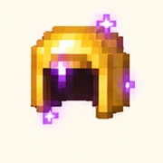
One per personal cache. Protection II and Unbreaking II. Not a tagged stillsuit.
Lore A bright relic recovered from a sietch cache; its gleam hints at the wealth that crosses Arrakis.
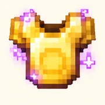
One per personal cache. Protection II and Unbreaking II. Does not prevent heatstroke.
Lore Desert traders prize its shine, though a stillsuit remains the wiser companion under a merciless sun.
One per personal cache. Protection II and Unbreaking II.
Lore A gilded cache find, worn with the memory of older expeditions and fortunes lost in sand.
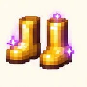
One per personal cache. Protection II and Unbreaking II.
Lore Their gold catches the desert light, a small extravagance in a world that measures life in water.
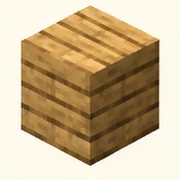
32 per cache. Ordinary building supplies.
Lore Shelter begins with simple materials; a wooden brace can turn a hollow in the rock into a refuge.
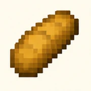
16 per cache. Ordinary food. The cache also contains 250 tagged spice units.
Lore A plain ration shared in the shade can matter more to a traveler than a chest of spice.
Cache overflow is transferred or dropped when you close the inventory. Each player can claim a specific sietch once. The enchanted gold gear does not qualify as a stillsuit.
Lore passages are creative flavour for Project Dune. The mechanical descriptions remain the gameplay reference.
These ordinary Minecraft items support plugin mechanics. They are not all granted by a faction kit.
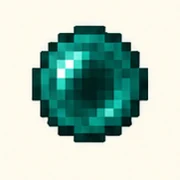
Main-hand use activates Ordos Shadow Step when wearing a matching full set.
Lore For Ordos, a brief passage through shadow is another tool in the art of remaining unseen.
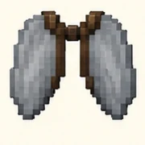
Carry one while wearing a stillsuit chestplate for the paid winged upgrade.
Lore Unadapted wings await the craft of a winged stillsuit before desert flight can wear a faction’s identity.
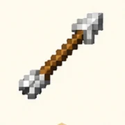
An arrow impact can activate a magma-marked spice bloom.
Lore A narrow line of intent, pointing toward the next route or the next danger beyond the dunes.
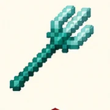
A trident impact can also trigger a spice bloom.
Lore A weapon whose shape recalls water-rich worlds, brought into a land where water itself is guarded.
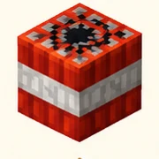
The tagged Ordos charge creates an immediate primed TNT explosion on impact.
Lore An explosive answer to stone and opposition, echoing the dangerous tools carried on frontier expeditions.
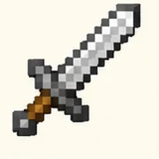
Haunted Fremen raiders carry one. Their equipment has zero gear drop chance.
Lore A familiar blade in unfamiliar sands; allegiance gives its bearer a cause, but not immunity.
Illustrated icons describe existing interactions; these pages do not add crafting recipes, new weapons, or a free-item command. Use only the documented kit and admin actions.
Lore passages are creative flavour for Project Dune. The mechanical descriptions remain the gameplay reference.
Recognize the equipment and landscape markers involved in Arrakis gameplay and navigation.
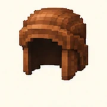
Ordinary helmet worn by Haunted Fremen raiders. Not faction-tagged loot.
Lore A raider’s worn hood carries the dust of harsh roads and the suspicion of desert travelers.
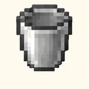
Used for natural-source collection. Normal water sales remove buckets; NPC water missions return empties.
Lore An empty vessel on Arrakis is a question: where will the next precious measure of water be found?
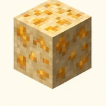
Arrakis spice deposit. The resource pack makes it spice-gold; harvest with the tagged shovel.
Lore An unremarkable patch may conceal the memory of a spicebloom beneath its surface.
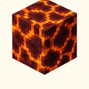
Untriggered bloom: 3x3 lower patch with a raised central magma block.
Lore A hot signal beneath the sand gives the spicebloom its visual language of pressure and eruption.
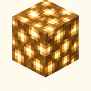
Raised bloom center after eruption. Nearby suitable sand becomes spice deposits.
Lore A light in the stone suggests a hidden cache, a promise of supplies beyond the reach of the sun.
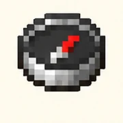
A Navigator interface icon for travel. It is a menu symbol, not a separately granted travel artifact.
Lore A celestial pointer for those who trust their destination to routes charted beyond the desert horizon.
Artwork is an illustrated reference, not a replacement resource pack. Actual models and textures come from Minecraft and the supplied DuneResourcePack.zip. The following page covers additional interface symbols; the entire vanilla item library is outside this catalogue.
Lore passages are creative flavour for Project Dune. The mechanical descriptions remain the gameplay reference.

Wallet / Solaris
Lore The gold of commerce gives shape to Solaris, the currency behind fares, sales and contracts.
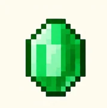
CHOAM contracts
Lore A merchant’s bright token evokes the negotiations that turn scarce goods into influence.

Contract offer
Lore A dispatch travels farther than a footprint, carrying news from a desert sighting to another world.

Active job / time
Lore Time counts differently beneath a waiting Guild notice or a smuggler’s mission deadline.

Spice exchange
Lore A blank ledger awaits a route, an account or an explanation preserved in a traveler’s own hand.

Player listings
Lore Knowledge is another provision: a field manual can spare a traveler an expensive lesson in the sand.

Cache / exchange
Lore A sealed cache is a quiet promise that someone once prepared for those who would follow.

Faction selection
Lore A heraldic face turns protection into allegiance, carrying a House’s presence into unfamiliar ground.
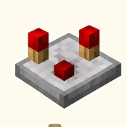
GUI reload guide
Lore An instrument of careful measures, suited to administrators who keep the machinery of the realm in balance.

Cancel listing
Lore An imperial refusal made visible: the route ends here until the proper authority opens it.

Leave worker job
Lore A threshold between exposed sands and shelter, or between one record and the next.
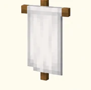
Faction help symbol
Lore A raised standard recalls the public face of a House and the authority claimed beneath it.

Arrakis travel guide
Lore No chart can tame Arrakis, but a marked route can preserve the memory of a safe passage.
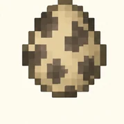
Admin summon help
Lore A symbol of the desert’s hostile inhabitants, used here as a control rather than a new creature.
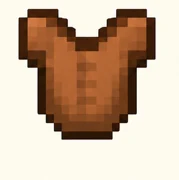
Kit menu symbol
Lore The stillsuit’s humble outer fabric hides the discipline of surviving where moisture cannot be wasted.

Previous / back
Lore A narrow line of intent, pointing toward the next route or the next danger beyond the dunes.
Lore passages are creative flavour for Project Dune. The mechanical descriptions remain the gameplay reference.
Tagged blaze rod, gold name and glint. Right-click in the main hand; operators only. Custom model data 1006.
Lore An ornament of command: its authority rests with operators entrusted to govern the Minecraft realm.
NPC administration icon: place an Arrakis Smuggler. An interface control, not a free egg item.
Lore A discreet visitor at the edge of the dunes may carry a contract worth more than an ordinary trade.
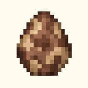
NPC administration icon: place a stationary, protected Guild Navigator at your position.
Lore A Navigator’s station begins with a quiet figure who stands between the traveler and the planetary routes.
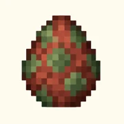
Imperial admin icon: summon Shai-Hulud. The actual worm is a Sniffer body with a hidden Husk controller.
Lore The maker’s summon is represented by a control symbol; the sandworm’s presence belongs to Arrakis.